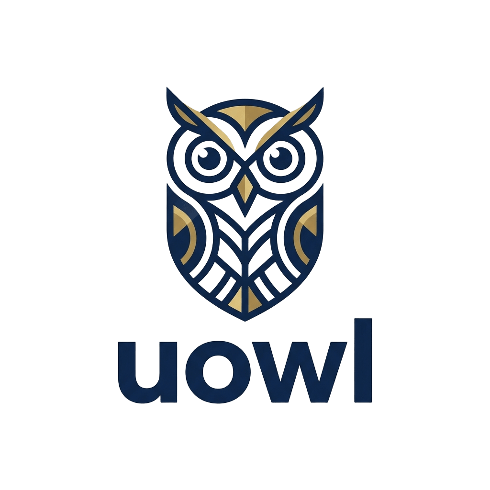
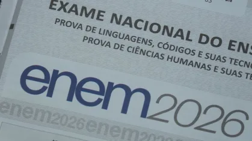
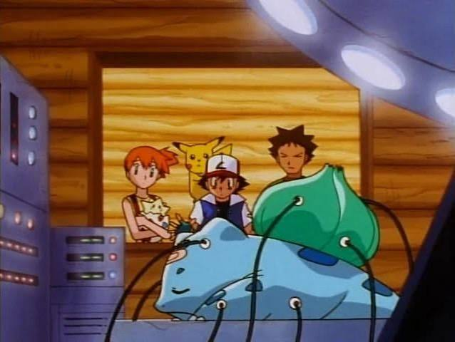

Exame exigiu reflexão sobre a garantia constitucional do acesso universal à saúde; confira como obras como Pokémon e One Piece poderiam ter sido aplicadas como repertório sociocultural no texto.

A relação entre o direito universal à saúde no Brasil e representações ficcionais da medicina foi caminho para repertórios criativos na redação do Enem 2026. (Foto: Arte/Folha do Estudante)
Milhões de estudantes em todo o país enfrentaram no último domingo o primeiro dia de provas do Exame Nacional do Ensino Médio (Enem) 2026. O tema da redação deste ano, que pegou muitos candidatos de surpresa, colocou o debate social em torno do Sistema Único de Saúde (SUS) no centro das atenções: “A valorização do Sistema Único de Saúde como direito universal”.
A proposta exigiu dos estudantes uma análise crítica sobre os avanços, a importância histórica da saúde pública gratuita e os desafios estruturais para garantir que a assistência chegue com qualidade a todos os cidadãos brasileiros, como prevê a Constituição Federal de 1988.
Segundo professores e corretores consultados pela reportagem, além de citações clássicas da sociologia e filosofia, a prova deste ano permitiu que candidatos mais atentos usassem referências do universo dos animes e dos jogos eletrônicos para enriquecer a argumentação.
A utilização de repertório sociocultural produtivo é um dos critérios de avaliação mais rigorosos da Competência 2 da Matriz de Referência do Enem. Veja a seguir duas referências da cultura pop que se encaixariam perfeitamente na temática da saúde pública universal:

Na famosa franquia criada pela Nintendo, os Centros Pokémon desempenham o papel de unidades hospitalares 100% públicas, gratuitas e acessíveis a qualquer treinador, sem distinção de renda, origem ou status social.
Aplicação na redação: O candidato poderia utilizar a obra por analogia idealizada. Ao citar a gratuidade e a presteza do atendimento fictício, o estudante demonstraria como o SUS busca concretizar esse mesmo ideal de universalidade no Brasil, contrastando a eficiência do mundo virtual com os desafios reais enfrentados pelo sistema brasileiro, como a superlotação e a falta de insumos.
Na aclamada obra de Eiichiro Oda, a Ilha de Drum vive sob a tirania do Rei Wapol, um governante que monopoliza a medicina ao banir todos os médicos do país e manter sob seu poder exclusivo um pequeno grupo de elite (os Twenty). A população é deixada sem assistência médica como forma de subjugação política, cenário que só muda com a resistência da Dra. Kureha e do médico Tony Tony Chopper.
Aplicação na redação: A narrativa serve para problematizar a mercantilização da saúde e os riscos da negligência estatal. O estudante poderia relacionar a tirania de Wapol à vulnerabilidade das populações periferizadas no Brasil quando o SUS é desvalorizado, argumentando que a saúde não pode ser tratada como privilégio de poucos ou mercadoria de mercado, mas sim como dever inalienável do Estado.
| Obra / Anime |
|---|